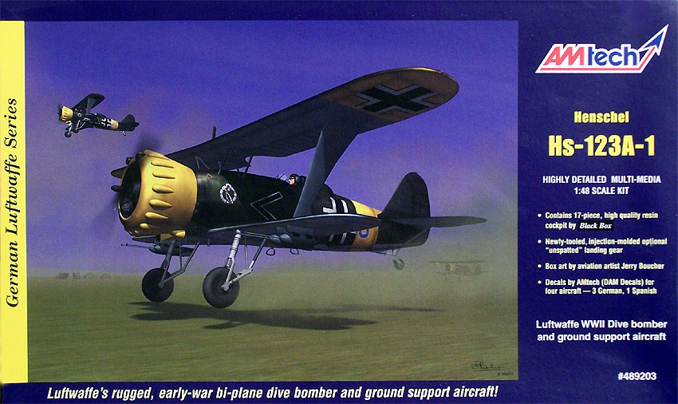
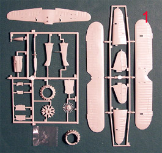
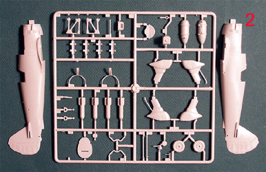
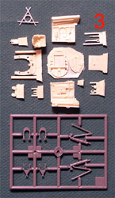
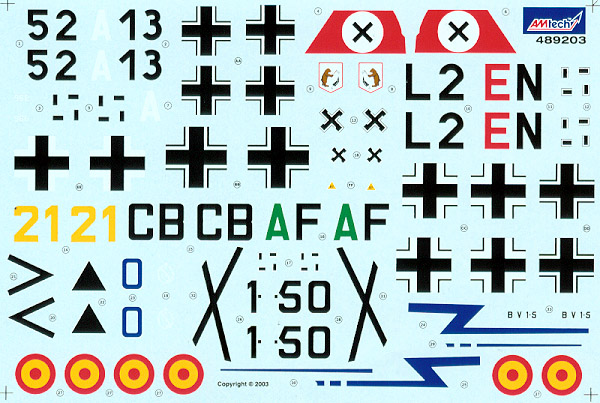

{kind=link}
{kind=link}
{kind=link}


AM Tech 1/48 Henschel Hs-123A-1

Kit #489203
MSRP $29.98
Images and text Copyright © 2005 by Matt Swan
Developmental Background
The concept of dive-bombing was pursued by German planners from soon after the end of World War One, and they had explored several avenues by the time the Reichs Luftfahrt Ministerium was established in 1933. The Henschel Flugzeugwerke AG designed the Hs-123 as a stopgap measure until a more advanced dive-bomber type should emerge, what ultimately became the Junkers Ju-87. Henschel's first aircraft for the German forces flew for the first time at Johannisthal near Berlin May 8, 1935.
The Hs 123 was of sesqui-plane plan form and construction was all metal, except for the upper wing surfaces aft of the forward spar and the control surfaces, which were fabric covered. The pilot’s cockpit was open. Like the FIAT CR fighters designed by Celestino Rosatelli, the Hs-123 lacked the maze of bracing wires common in biplanes. This resulted in lower drag factors allowing for improved performance. Designed as a dive-bomber it was not this role that allowed the aircraft to remain in service well into 1944, but rather it was its role as a Schlachtflugzeug, or close-support aircraft.
The Hs-123 first experienced combat in the Spanish Civil war (where it was known as the "Angelito" [little angel]) and helped define the role of the close air support aircraft for the Luftwaffe. The type proved to be exceptionally useful during the Polish campaign. It proved so useful that it was deployed to the Balkans in 1941 where it proved readily adaptable to the harsh conditions found in that theatre. It was among the very few aircraft that always had operational readiness during the Russian winter of 1941/1942. By removing the landing gear spats the severe mud conditions failed to prevent the Hs-123 from performing operational missions when all other aircraft were grounded. During 1943, it was seriously proposed that Hs-123 production be re-started, but this proved impractical as the production jigs and tooling had been destroyed in 1940. Due to this decision, mid-1944 saw the Hs-123 finally grounded not by enemy action or the weather but simply by attrition and lack of spare parts. It is unclear if any survive to this day.
The Kit
When this kit was manufactured by ESCI/ERTL is was a pretty darned good kit but when AM Tech acquired the molds and added a Black Box cockpit set to the package as well as an unspatted landing gear option, then released it onto the market in 2003 the kit became truly great. The model retains the original finely raised panel lines and light fabric texture of the earlier casting. The primary parts are molded in light gray polystyrene and are crisp and clean. There are no signs of flash, sink marks or injector pin markings. There are three rings visible on the ailerons but they are not ejector pin marking rather actual details of the aircraft. An additional small sprue of darker gray plastic piece covers the optional parts for the skeletal landing gear found on the Eastern Front.
Taped inside one fuselage half is a small bag containing a single part. I was slightly puzzled by this for a few moments until I realized it was the cowling brace piece that fits in front of the engine (parts image #3 upper right corner). By taping the part tightly inside the fuselage, AM Tech has assured that it will retain the correct bowed shape for installation – neat idea! A separate bag contains the Black Box resin pieces. These pieces display wonderfully crisp detail and no micro bubbles. The original kit cockpit exists on the parts sprue but the BB parts allow for an accurate representation of the deep cockpit and include all the instruments, control levers, rudder pedals and finely detailed control yoke. There is a single clear part in this kit, which does have a large chunk of plastic slag hanging off the bottom.
The primary kit parts line up well but there are a few areas where gaps are visible like the fit of the lower wing to the fuselage and the cowling to the fuselage. Some judicious use of putty will be needed here. Around the cowling, I found several raised marks on the plastic that make me think someone attacked the mold with a screwdriver. Its fixable and something that cannot be ignored. In the parts inventory we have 59 light gray pieces from the original ESCI kit, one clear part, 7 new plastic pieces from AM Tech and 16 resin pieces from Black Box for a total of 83 parts in the box.



You may click on the above images to view larger pictures
Decals and Instructions
Am Tech has done a really nice job on the instructions. The molder is presented with an actual booklet here of twelve pages. The cover page contains a black and white copy of the box art and a very nice historical background on the aircraft. This historical section is supplemented by additional information on the side panel of the box. The next seven pages are filled with exploded construction views. Some of these are edited pieces from the original ESCI instructions while many others are new pieces covering the installation of the resin pieces and the conversion to unspatted landing gear. Color codes have been inserted throughout the instructions along with many assembly tips.

Following this are several pages of exterior painting instructions and decal placement instructions. The painting instructions give the modeler a few interpretative choices on primary colors and give basic patterns for five different aircraft. The booklet closes with a page of advertisement for upcoming AM Tech releases.
Would you take a look at those decals, aren’t they great? Options for five aircraft are provided here, two with fully spatted landing gear, one with semi-spatted gear and two with unspatted skeletal gear. Four of these are Luftwaffe schemes; one with a tri-color splinter over 65, from different years of the war and one is a Spanish National scheme in doped aluminum. We do not get any service stencils or warning marking but the base markings are very fine. The print registry is right on the money, the color density looks to be quite good, and colors are vibrant. Previous experience with AM Tech decals tells me that they are nicely thin and respond well to standard setting solutions like Micro-Sol, Micro-Set and Mr. Marker Soft.
Conclusions
Back in the day when this was an ESCI kit it was quite nice, now it is very nice. There are a few seams that will need putty but the basics of the old portion of the kit are very good. The new pieces, especially from Black Box are great. The large sheet of decal options has already prompted me to buy a second kit just so I can do that Spanish bird. Still, choosing just one of the Luftwaffe schemes is difficult.
In aftermarket equipment there are just a few items like from Extratech who has two sets of photo etched parts. One of these is specifically intended for the old ESCI kit. The other looks like it could add marginally to the AM Tech kit. JBOT offers a set of decals for the unit flown by Lt. Hamann, which is somewhat interesting. Now if you should have one of the old ESCI kits, also issued by Italeri, you can upgrade that to the AM Tech level by buying the extra kit pieces from Hannats in the U.K.